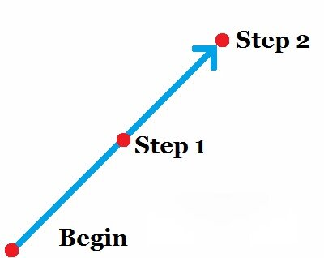

Principles of
the Double Reverse Spin
10 August 2016
Most beginning dancers look upon the double reverse spin with fear and awe, and even intermediate dancers can struggle through this Bronze figure. Much of the trouble comes from not understanding the correct principles of rotation and other mechanics used, and so hopefully by learning a few key principles, the figure will be easier and more enjoyable to dance. First, as a refresher, here is a video of the figure being demonstrated.
Note that the Man in this video chooses to use almost a twist turn action by crossing the RF behind the LF and keeping the toe on the ground. This is a stylistic adaptation, and has little effect on the mechanics of the figure. The traditional method is to close the balls of the feet together during the pivot, and send the LF forward as the lowering at the end of the figure occurs. Whichever way you choose to dance it, it is unimportant.
Don't Rotate Early
The first thing to know about this and all Reverse Turns is that rotation needs to happen later. In Natural Turns, commencing the rotation with the body sends the Lady more to the Man's right and allows him to pass, whereas for Reverse Turns, commencing the rotation of the body brings the Lady directly in front of the Man, making the step very difficult. Check yourself by taking step 1 and stopping between feet. Each partner should be on his own line of movement, and the Lady should not be in front of the Man, based on the direction of travel.
This part is crucial. If you begin to turn too soon, your positioning will be destroyed and the remainder of the figure will have to be performed in a precarious situation. It may seem counterintuitive to try not to rotate on a figure with so much rotation, but rotating at the right time is what is important.
The Man Travels Straight
Another extremely important principle is that the person going forward always goes straight, and the person going accommodates. Here, the Man is going forward on step 1 and 2, and his steps need to travel in a straight line.
A common mistake is for the Man to take the first step (let's say) DW, and the second step between DW and LOD. This happens because either: 1) he didn't confidently move through his partner, and tried to avoid her; or 2) the Lady did not accommodate the Man, and did not yield the space to him. To see this, you need to take a video of yourself, and make sure that the direction the Man travels between commencement and step 1 is the same as the direction he travels between step 1 and 2.
Two Turns
The Double Reverse Spin is comprised of two rotational parts - the first is the Heel Turn for the Lady (the end of step 1 and beginning of step 2), and the second is the Toe Pivot for the Man (steps 3 and 4 for the Lady, and the end of step 2 for the Man). During the Heel Turn, the Lady is directly in the centre of the turn: her heel is placed on the floor, and may not move, while the Man must orbit her. If he pushes too far into her or pulls too far away from her, she will not be able to rotate over a single point on the floor. Likewise, during the Toe Pivot, the Man is the centre of the turn: his toe is placed on the ground and may not move, while the Lady must orbit him. Just as she would be put off balance over in her heel turn if her partner comes too close or strays too far from her, so too will he be put off balance if she were to do the same.
This may seem like a trivial concept, but one of the biggest problems dancers have with the Double Reverse Spin is that they treat it as a single unit of turn, when it needs to be treated as two. On the first turn, the Lady should feel like an anchor that the Man can pass around, and the Man should feel like the anchor likewise on the second turn. This isn't to say that either partner should be pulling on the other, but an awareness needs to be had by the person going around that the central person may not move anywhere.
A good exercise to practice this is to take a broomstick as a partner. The Man will dance the figure where both he and the broomstick move on step 1, but positioning is maintained, then he will plant the broomstick on the floor and step around it, while keeping it vertical, then as he collects his feet he will dance his Toe Pivot while bringing the broomstick around himself. The Lady will dance the figure where both she and the broomstick move on step 1, but positioning is maintained, then she will bring the broomstick around herself as she dances her heel turn, finishing by planting it on the floor and stepping around it as she keeps it vertical.
Breakdown
Let's break down what happens on each half beat of the music. N.B. Although other rhythms are allowable, we will be using the Lady's timing 1 2 & 3.
| Beat | Man | Lady |
| 1 | LF forward, no turn in the shoulders, but LF may point slightly outward | RF back, no turn in the shoulders, but RF may point slightly inward |
| & | RF passes LF, shoulders begin to turn L | LF closes to RF, heel turn |
| 2 | RF forward in the same direction as the first step, body turned L to stay with Lady | Take weight onto RF, shoulders turn slightly to L to stay with Man |
| & | RF begins to pivot to the L, pointing now toward Lady. LF closes to RF without weight | RF diagonally forward, beginning to travel around the Man |
| 3 | RF continues to pivot to the L, pointing always toward Lady. | Swivel the RF to the left as the LF crosses in front of RF, in order to travel more around the Man |
| & | - | - |
You will notice that this is explained slightly differently from the way the traditional technique explains this figure. This is because we are breaking the figure down much more thoroughly, and examining different slices in time. One such difference is that on step 2 for the Man, the traditional technique says "RF to side," whereas here I say "RF forward." The reason for this is that the step commences forward, and then after the foot is placed it ends as a side step as weight is taken on to it. This is more visible, perhaps, in a regular Reverse Turn, as here that foot swivel is incorporated into the Toe Pivot. The same phenomenon occurs on step 3 (beat 2&) for the Lady.
Check yourself to Improve
If the information in this article is new for you, there is probably too much for you to successfully implement on your first try, but don't try it and give up. Check yourself to make sure you're doing it right. Take the first step and stop between feet. Is the Lady in the Man's way based on the direction of travel? Stop on step 2 between feet. Is the Man travelling the same direction he was on step 2? Feel the rotation slowly. Where would the Man have to step on step 2 to allow the Lady to stay in one spot. Where would the Lady have to step on steps 3 and 4 to keep the Man in one spot? These things take a lot of careful attention and awareness to perfect, but hopefully you now have some principles to guide you though this figure.